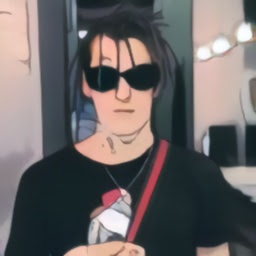

Ихтиер Кизару(Махмуд Угли, жил всегда) — Главный герой в мире. Его появление в каждой серии ознаменовывается великим событием Знает все о компьютерных играх. Черезвычайно скрытен. Главный девиз: приляг и поспи. Придерживается таких принципов жизни. Но его навыков оказалось недостаточно и герой погиб в конце 3-го семестра от рук Деканата.
